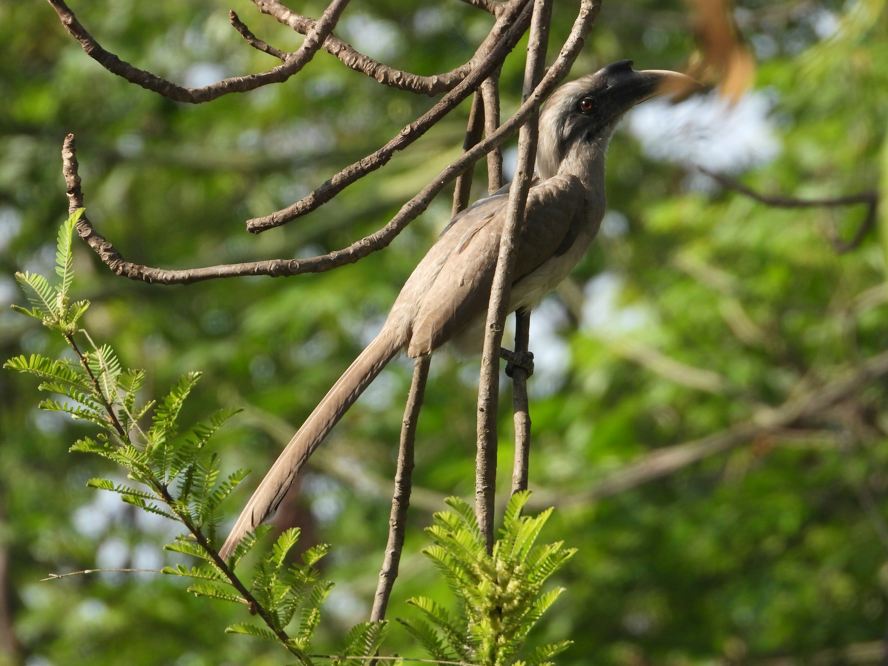

The Indian Grey Hornbill is a medium-sized hornbill with grey plumage, a long tail, and a dark bill with a casque. It is well adapted to open woodland and urban environments containing mature trees. Fruits form a major part of its diet, although it also catches insects and small animals. It is frequently seen flying between trees with steady, powerful wingbeats. Compared with the similar Malabar Pied Hornbill, it is distinguished by the combination of features described above. Its preference for open woodland, gardens, farmland, plantations, and urban areas with mature trees also helps separate it from species that use different habitats. Its characteristic behaviour, including arboreal and usually seen in pairs or small groups, provides another useful field clue. Taken together, these differences make it easier to distinguish from similar species when the bird is seen clearly.